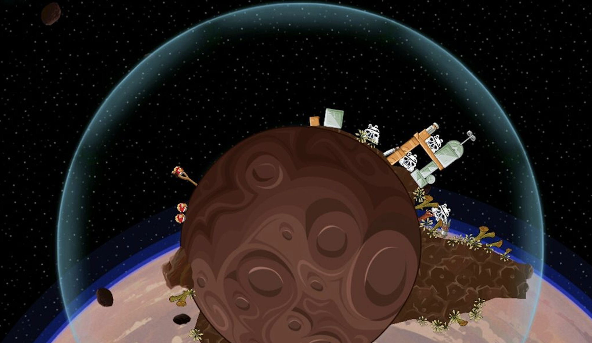

At least, not completely.
Think of an apple 🍎 falling from a height. It falls at a fixed acceleration on earth, a number calculated to be close to $9.81\ \text{m/s}^2$. We call this number $g$, and anyone who has ever read a physics textbook would know this. If you don't, I just told you. 😃
A feather and a ball fall at the same rate inside a vacuum chamber. There's a very famous video of this: watch it here.
Imagine being taught in physics: g is the acceleration of the apple.
Not about earth. Not about its radius, shape, or composition, and not about the physics that makes 9.81 the number it is: $GM/R^2$, for those who know.
Just: g = apple acceleration. Plane falling from the sky? Apple rate. Meteor crashing? Apple rate.
It sounds absurd. Because it is!
So imagine my frustration when I learn (not in a classroom, but on my own) about dark energy, the Hubble sphere, and the horizon beyond which nothing in the universe can ever reach us. Beyond a certain distance, galaxies are receding faster than light can cross the space between us. Any galaxy beyond that horizon is gone. Not far. Just gone.
Dark energy is causing our universe to expand at an accelerating rate, and this acceleration keeps growing. We are permanently isolated from most of the universe because we have no way of seeing what it contains. Its light, or more precisely, any information about it, will never reach us. And because the acceleration is growing, more and more galaxies are crossing out of our sphere of visibility every day.
Read that again. Any information about it will never reach us.
This is exactly it.
The speed at which information travels in the universe: the speed of causality,
is $3 \times 10^8$ m/s.
$c$ is the boundary beyond which nothing can travel faster.
Photons are massless, so they travel at exactly this speed. Neutrinos, nearly massless, travel fractionally slower.
(Those who do not like science or physics may stop reading now. You probably will not like what comes next.)
$c$ appears in Maxwell's equations: the equations governing electricity and magnetism. Those equations only make sense if this number stays fixed.
If $c$ changed, the equations that govern our universe would fall apart. The structure of atoms, the behaviour of light, the fabric of spacetime itself: none of it holds without a fixed $c$. This would become a cartoon world.
With planets like Tatooine, probably. And many angry birds.

The Michelson-Morley experiment of 1887 set out to detect the aether: the medium scientists believed light must travel through, the way sound travels through air. Instead, they found nothing. Light travelled at the same speed regardless of direction, regardless of Earth's motion. Just a fixed, unchanging $c$. It was Einstein who, in 1905, accepted this instead of explaining it away. It probably went something like:
"Cool, $c$ is the speed of causality in our universe. Light travels at this speed because photons are massless. Now let's move on and do more groundbreaking shit."
$c$ is a fundamental property of spacetime, and it happens to be $3 \times 10^8$ m/s. Photons are the passengers that travel at this speed.
Case in point: LIGO. September 14, 2015. Gravitational waves from a black hole collision. Ripples in spacetime itself, detected during a test run of our interferometer, changing history and physics. No electromagnetic radiation. No photons. Just ripples in space, travelling at the speed of causality, $c$.
To me, it feels strange to say those ripples travel at the speed of light. They have nothing to do with light.
And that's the problem. Calling $c$ the speed of light is a historical accident. We discovered it through light, so we named it after light. Like discovering gravity by dropping an apple and calling it the apple constant. (But wait.. We didn't do that! We don't call it the apple constant! Logic won somewhere.)
$c$ is the exchange rate between space and time: how fast time ticks relative to how fast you move through space. It appears in Maxwell's equations, in $E = mc^2$, in gravitational waves, in the Hubble sphere, everywhere. Not because everything is secretly about light, but because everything is about spacetime geometry, and $c$ is the fundamental constant of that geometry. Light just happens to be massless, so it travels at $c$. Passenger. Not the point!
If we taught it honestly, it would go:
- Spacetime has a speed limit.
- Call it $c$.
- Anything massless travels at exactly $c$.
- Light is massless → therefore light travels at $c$.
- We discovered $c$ through light, so we called it "the speed of light".
- OOPS. BAD LABEL. 😐
One of the biggest pedagogical failures in how physics is taught: we start with light, derive everything else, and leave generations of students thinking relativity is about light, rather than about the geometry of the universe.
In my humblest of opinions:
We don't call $g$ the apple constant.
We shouldn't call $c$ the speed of light.